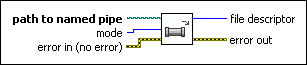

Open Pipe VI
Owning Palette: Pipes VIs
Requires: Base Development System (Linux)
Opens a named pipe and returns file descriptor, which you pass to subsequent Pipes VIs.
A named pipe is a special file that can be used to communicate between separate Linux processes. Unlike a normal file, you must open a pipe in read mode, usually from another process or application, before you open the pipe in write mode so data written to the pipe can be passed to the reading process. Otherwise, an I/O error occurs and the open process fails.

 Add to the block diagram Add to the block diagram |
 Find on the palette Find on the palette |